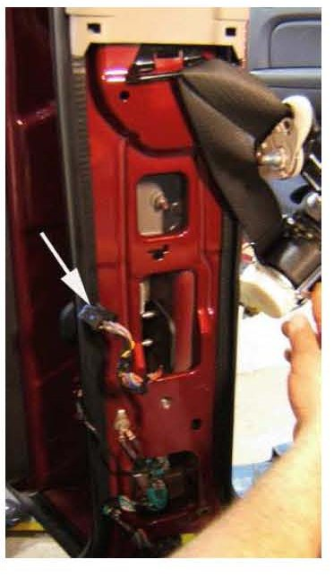
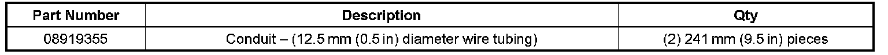
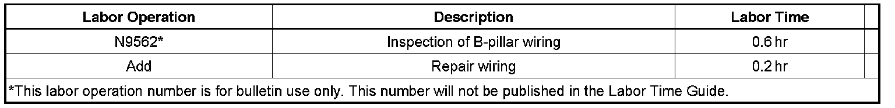

Electrical - Various Rear Door Electrical Malfunctions
TECHNICALBulletin No.: 06-08-44-009A
Date: August 04, 2008
Subject:
Rear Door Locks/Rear Windows/Courtesy Lamps/Rear Speakers Inoperative, Blown Fuse, SIR DTC Codes (Inspect/Repair, Wrap Wire Harness)
Models:
2007-2009 Cadillac Escalade, Escalade ESV, Escalade EXT
2007-2009 Chevrolet Avalanche, Silverado (Crew Cab Only), Suburban, Tahoe
2007-2009 GMC Sierra (Crew Cab Only), Yukon, Yukon Denali, Yukon XL, Yukon Denali XL
Supercede:
This bulletin is being revised to add model years. Please discard Corporate Bulletin Number 06-08-45-009 (Section 08 - Body and Accessories).
Condition
Some customers may comment on one or all of the following conditions:
^ Rear door locks inoperative
^ Rear windows inoperative
^ Door courtesy lamps inoperative or stay on at times
^ Rear speakers inoperative
^ Any fuse (related to the rear doors) that is blown/shorted
^ SIR codes related to the pretensioner
^ Interior dimming inoperative
Cause
The B-pillar wiring harness around the seat belt retractor may be or become chaffed/damaged. The correction listed below is intended to repair any damage and prevent future concerns.
Correction
Important:
This repair operation is intended to be done on both B-pillars.
1. Remove the lower B-pillar cover.
2. Disconnect the Supplemental Inflatable Restraint (SIR) connector.
3. Inspect the wiring harness in the B-pillar around the seat belt retractor.
4. Make any necessary wiring harness repairs.
5. Wrap the "entire" harness with electrical tape.
6. Install conduit tubing around the harness.

7. Install the lower B-pillar cover.

Parts Information
Warranty Information
Important:
The labor operation associated with this bulletin is written for inspection of the B-pillar wiring harness and, if necessary, repair.

For vehicles repaired under warranty, use the table above.

Disclaimer